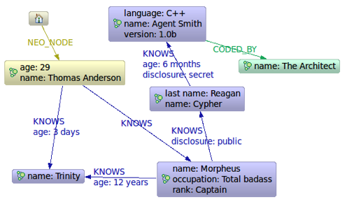

4.5. 遍历查询¶
了解更多关于遍历查询的信息，请参考：tutorial-traversal。
了解更多关于遍历查询范例的信息，请参考：:ref: 第 7 章 数据模型范例 <chapter7_index> 。
4.5.1. 黑客帝国¶
对于上面的黑客帝国范例的遍历查询，这次使用新的遍历API：
提示
范例源代码下载地址： NewMatrix.java朋友以及朋友的朋友.
- private static Traverser getFriends( final Node person ) {
- TraversalDescription td = Traversal.description()
- .breadthFirst() .relationships( RelTypes.KNOWS, Direction.OUTGOING ) .evaluator( Evaluators.excludeStartPosition() );
return td.traverse( person );
}
让我们只想一次真实的遍历查询并打印结果：
输出结果：
谁编写了黑客帝国？
打印输出结果：
现在我们知道是谁编写了黑客帝国:
游走一个有序路径
这个范例展示了如何通过一个路径上下文控制一条路径的表现。
提示
范例源代码下载地址： OrderedPath.java创建一个图数据库.

现在，关系 ( REL1 → REL2 → REL3 ) 的顺序保存在 一个
ArrayList对象中。当遍历的时候，Evaluator 能针对它进行检查，确保只有拥有预定义关系顺序的路径才会被包括并返回：定义如何游走这个路径.
执行一次遍历查询并返回结果.
输出结果:
在这种情况下我们使用一个自定义类来格式化路径输出。下面是它的具体实现：
为了了解更多关于 Path 的有选择的输出的细节，请参考：Traversal类 。
注意
下面的范例使用了一个已经废弃的遍历API。它与新的遍历查询API共享底层实现，所以它们的性能是一样的。比较起来它提供的功能非常有限。
4.5.2. 老的遍历查询 API¶
这是我们想遍历查询的第一个图数据库：
图 4.3. 黑客帝国节点空间预览
提示
范例源代码下载地址： Matrix.java朋友以及朋友的朋友.
让我们执行一次真实的遍历查询并打印结果：
下面是输出结果：
是谁编写了黑客帝国呢?
private static Traverser findHackers( final Node startNode ) { return startNode.traverse( Order.BREADTH_FIRST, StopEvaluator.END_OF_GRAPH, new ReturnableEvaluator() { @Override public boolean isReturnableNode( final TraversalPosition currentPos ) { return !currentPos.isStartNode() && currentPos.lastRelationshipTraversed() .isType( RelTypes.CODED_BY ); } }, RelTypes.CODED_BY, Direction.OUTGOING, RelTypes.KNOWS, Direction.OUTGOING ); }输出结果：
现在我们知道是谁编写了黑客帝国:
4.5.3. 在遍历查询中的唯一路径¶
这个范例演示了节点唯一性的使用。下面是一个想象的有多个负责人的领域图，这些负责人有它们增加的宠物，而这些宠物又生产了它的后代。
图 4.4. 后代范例图

为了返回 Pet0 的所有后代，要求与 Pet0 必须有 owns 和 Principal1 关系（实际上只有 Pet1 和 Pet3 ），遍历查询的 Uniqueness 应该设置成 NODE_PATH 来代替默认的 NODE_GLOBAL 以至于节点可以被遍历不止一次，而且那些有不同节点但能有一些相同的路径（比如开始节点和结束节点）也能被返回。
这将返回下面的路径:
在 path.toString() 的默认实现中，(1)–[knows,2]–>(4) 表示一个ID=1的节点通过一个ID=2，关系类型为 knows 的关系连接到了一个ID=4的节点上。
让我们从一个旧的中创建一个新的 TraversalDescription ，并且设置 uniqueness 为 NODE_GLOBAL 来查看它们之间的区别。
提示
TraversalDescription 对象是不变的，因此我们必须使用一个新的实例来返回新的 uniqueness 设置。
现在只有一条路径返回:
4.5.4. 社交网络¶
注意: 下面的范例使用了处于实验阶段的遍历查询API。
社交网络（在互联网上也被称为社交图）是天然的用图来表示的模型。下面的范例演示了一个非常简单的社交模型，它连接了朋友并关注了好友动态。
提示
范例源代码下载地址： socnet简单的社交模型
图 4.5. 社交网络数据模型

一个社交网络的数据模型是简漂亮的：有名称的 Persons 和有时间戳文本的 StatusUpdates 。这些实体然后通过特殊的关系连接在一起。
Person
- friend: 连接两个不同 Person 实例的关系 (不能连接自己)
- status: 连接到最近的 StatusUpdate
StatusUpdate
- next: 指向在主线上的下一个 StatusUpdate ，是在当前这个状态更新之前发生的
状态图实例
一个 Person 的 StatusUpdate 列表 是一个链表。表头（最近动态）可以通过下一个 status 找到。每一个随后的 StatusUpdate 都通过关系 next 相连。
这是一个 Andreas Kollegger 微博记录图早上走路上班的范例：

为了读取状态更新情况，我们可以创建一个遍历查询，比如：
这给了我们一个遍历查询，它将从一个 StatusUpdate 开始，并一直跟随状态的主线直到它们运行结束。遍历查询是懒加载模式所以当我们处理成千上万状态的时候性能一样很好 — 除非我们真实使用它们，否在它们不会被加载。
活动流
一旦我们有了朋友，而且它们有了状态消息，我们可能想读取我们的朋友的消息动态，按时间倒序排列 — 最新的动态在前面。为了实现这个，我们可以通过下面几个步骤：
- 抓取所有的好友动态放入一个列表 — 最新的排前面。
- 对列表进行排序。
- 返回列表中的第一个记录。
- 如果第一个迭代器为空，则把它从列表移除。否则，在这个迭代器中获取下一个记录。
- 跳转到步骤2直到在列表中没有任何记录。
这个队列看起来像 这样 。
代码实现像这样：
PositionedIterator<StatusUpdate> first = statuses.get(0); StatusUpdate returnVal = first.current(); if ( !first.hasNext() ) { statuses.remove( 0 ); } else { first.next(); sort(); } return returnVal;